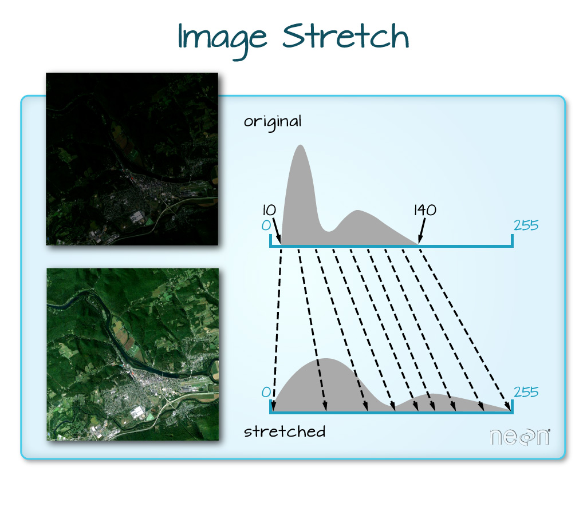

library(tidyverse)
library(sf)
library(terra)
Source Materials
The following materials are modified from curriculum developed by Earth Lab and the Raster Analysis with terra book.
1. Background
In Lab #6, you explored various band combinations and plotted false color images with tm_rgb() from {tmap}. False color images allow you to visually highlight specific features in an image that may otherwise not be readily discernible. To add to your toolbelt, you will now be plotting false color images with plotRGB() from {terra}.
Many Ways To Plot a False Color Image
You can plot false color composites with ggplot2 too! Check out this tutorial.
The plotRGB() function allows you to apply a stretch to normalize the colors in an image. You can either apply a linear stretch or histogram equalization. A linear stretch distributes the values across the entire histogram range defined by the max/min lower bounds of the original raster. A histogram equalization stretches dense parts of the histogram and condenses sparse parts.
But why would you want to normalize the colors in an image?


“When the range of pixel brightness values is closer to 0, a darker image is rendered by default. You can stretch the values to extend to the full 0-255 range of potential values to increase the visual contrast of the image. When the range of pixel brightness values is closer to 255, a lighter image is rendered by default. You can stretch the values to extend to the full 0-255 range of potential values to increase the visual contrast of the image.”
You are provided Landsat data for the site of the Cold Springs fire that occurred near Nederland, CO. The fire occurred from July 10-14, 2016 and the Landsat images are from June 5, 2016 (pre-fire) and August 8, 2016 (post-fire). The multispectral bands, wavelength range, and associated spatial resolution of the first 7 bands in the Landsat 8 sensor are listed below.
| Band | Wavelength range (nanometers) | Spatial Resolution (m) | Spectral Width (nm) |
|---|---|---|---|
| Band 1 - Coastal aerosol | 430 - 450 | 30 | 2.0 |
| Band 2 - Blue | 450 - 510 | 30 | 6.0 |
| Band 3 - Green | 530 - 590 | 30 | 6.0 |
| Band 4 - Red | 640 - 670 | 30 | 0.03 |
| Band 5 - Near Infrared (NIR) | 850 - 880 | 30 | 3.0 |
| Band 6 - Short-Wave Infrared 1 (SWIR1) | 1570 - 1650 | 30 | 8.0 |
| Band 7 - Short-Wave Infrared 2 (SWIR2) | 2110 - 2290 | 30 | 18 |
2. Get Started
- Create an
.Rprojas your version controlled project for Week 6 - Create a Quarto document inside your
.Rproj - Download this data folder from Google Drive and move it inside your
.Rproj - Load all necessary packages, read spatial objects, and define
nbr_funfunction
# Set directory for folder
pre_fire_dir <- here::here("data", "LC80340322016189-SC20170128091153")
# Create a list of all images that have the extension .tif and contain the word band
pre_fire_bands <- list.files(pre_fire_dir,
pattern = glob2rx("*band*.tif$"),
full.names = TRUE)
# Create a raster stack
pre_fire_rast <- rast(pre_fire_bands)
# Read mask raster
pre_mask <- rast(here::here("data", "LC80340322016189-SC20170128091153", "LC80340322016189LGN00_cfmask_crop.tif"))# Set directory for folder
post_fire_dir <- here::here("data", "LC80340322016205-SC20170127160728")
# Create a list of all images that have the extension .tif and contain the word band
post_fire_bands <- list.files(post_fire_dir,
pattern = glob2rx("*band*.tif$"),
full.names = TRUE)
# Create a raster stack
post_fire_rast <- rast(post_fire_bands)
# Read mask raster
post_mask <- rast(here::here("data", "LC80340322016189-SC20170128091153", "LC80340322016205LGN00_cfmask_crop.tif"))nbr_fun <- function(nir, swir2){
(nir - swir2)/(nir + swir2)
}3. Your Task
Now, to meet this week’s learning objectives, your task:
- Rename the bands of the
pre_fireandpost_firerasters usingnames()
Next, for each of the pre_fire and post_fire rasters…
- Mask out clouds and shadows with the
pre_maskandpost_maskrasters
- Hint: Set
mask > 0toNA
Dealing with Clouds and Shadows
“Extreme cloud cover and shadows can make the data in those areas, un-usable given reflectance values are either washed out (too bright - as the clouds scatter all light back to the sensor) or are too dark (shadows which represent blocked or absorbed light)” (Earth Lab)
- Plot a true color composite using
plotRGB()
- Map the red band to the red channel, green to green, and blue to blue
- Apply a linear stretch
“lin”or histogram equalization“hist”
How To Decide How To “Stretch” Raster Imagery?
To make an informed choice about whether to apply a linear stretch or histogram equalization, check the distribution of reflectance values of the bands in each raster:
# View histogram for each band
hist(pre_fire_rast,
maxpixels = ncell(pre_fire_rast),
col = "orange")- Plot two false color composite using
plotRGB()
- Map the SWIR2 band to the red channel, NIR to green, and green to blue
- Apply a linear stretch
“lin”or histogram equalization“hist”
What is the SWIR, NIR, Red false color scheme?
“Combining SWIR, NIR, and Red bands highlights the presence of vegetation, clear-cut areas and bare soils, active fires, and smoke; in a false color image” (EOS Data Analytics)
- Calculate the normalized burn ratio (NBR)
- Hint: Use
lapp()like you previously did for NDVI and NDWI in Week 4
Let’s bring it home!
- Find the difference NBR, where \(dNBR = prefireNBR - postfireNBR\)
- Plot the
dnBRraster
- Bonus Challenge: Use
classify()to assign the severity levels below:
| Severity Level | dNBR Range |
|---|---|
| Enhanced Regrowth | < -.1 |
| Unburned | -.1 to +.1 |
| Low Severity | +.1 to +.27 |
| Moderate Severity | +.27 to +.66 |
| High Severity | > .66 |